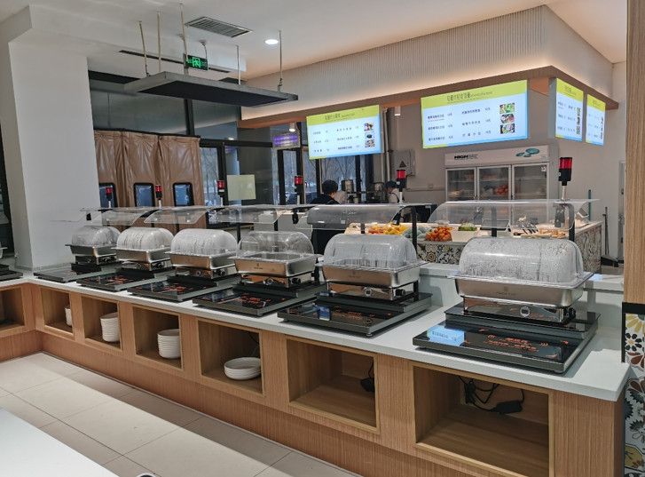
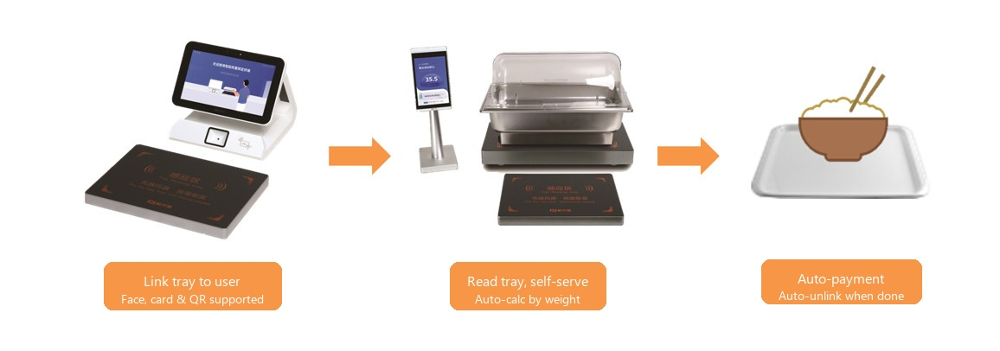
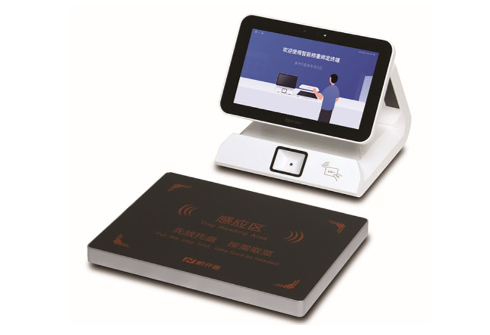
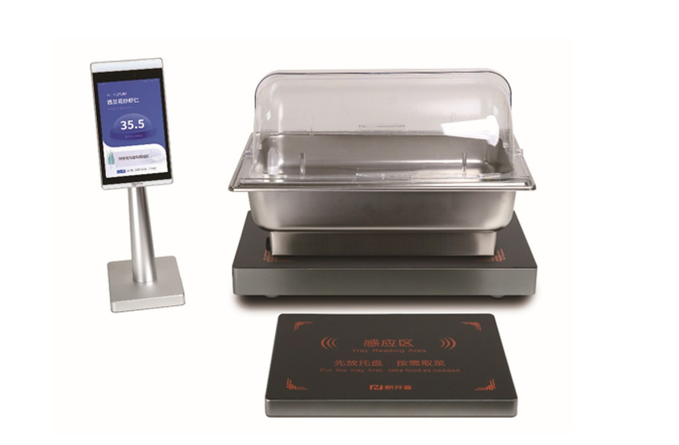
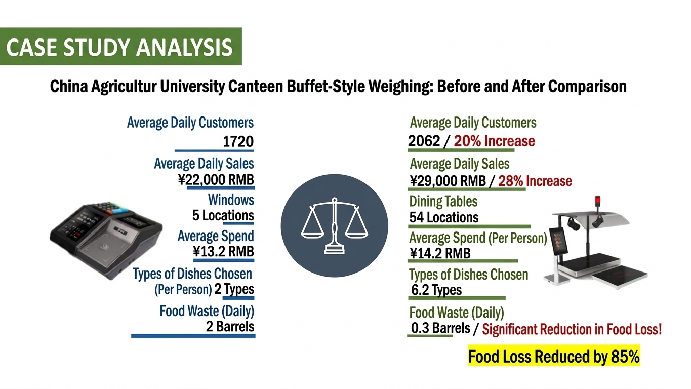

Pay Only for What You Eat.
High-precision electronic scales calculate by the gram. The next-generation "pay for what you eat" solution — ideal for buffet-style cafeterias.

How Weight-Based Checkout Works
Just 3 simple steps to smart pay-for-what-you-eat checkout.

Tray Linking
Link your tray to your identity via face recognition, QR code, or IC card. Simply place the tray on the sensing area to complete linking.
Self-Serve
Take only the amount you want at each food station. Electronic scales measure weight in real-time, auto-calculating by the gram.
Auto Settlement
After your meal, the total is automatically calculated. Pay only for what you took. No cashier needed — smooth and seamless.
Products
Two key devices that make weight-based checkout possible.

Tray Linking Terminal
A dedicated terminal that links trays to users via face recognition, QR code, or IC card. Authentication status is displayed in real-time on the touchscreen. Simply place the tray on the sensing area (Tray Reading Area) to complete linking and start your meal smoothly.

Weighing Station
An all-in-one set with high-precision electronic scale, food warmer, and display panel. Weight is measured in real-time as food is served, auto-calculating by the gram. Place your tray on the sensing area to automatically record — only what you take is accurately charged.
Key Features
Gram-Level Precision
High-precision electronic scales measure food weight accurately. Ensures fair and transparent billing.
Reduced Food Waste
Take only what you need, significantly reducing food waste. Contributes to SDGs and lower environmental impact.
Ideal for Self-Service
Perfect for buffet-style cafeterias. Diners freely choose their dishes and portions.
Auto Settlement
Totals are automatically calculated after meals. No cashier needed — dramatically reduces labor costs.
PC Management Platform
Centralized web-based management for products, orders, sales analytics, and equipment. Supports data-driven operations.
Multiple Payment Options
Supports face recognition, QR code, and IC card. Cashless operations for hygienic and smooth payments.
Technical Specifications
| Item | Specification |
|---|---|
| Tray Linking Terminal | |
| OS | Android |
| Display | 8–10 inch touchscreen |
| Authentication | Face recognition / QR / IC card |
| Communication | WiFi / TCP/IP |
| Weighing Station | |
| Scale Precision | Gram-level (capacity 30kg) |
| Display | With display panel |
| Alerts | Voice and light guidance |
| Communication | WiFi / TCP/IP |
| Operating Environment | -10℃ to 50℃ |
Implementation Benefits
Concrete results delivered by the weight-based checkout system.
80%+ Reduction in Food Waste
The pay-for-what-you-take model eliminates waste. Dramatically reduces food disposal while achieving cost savings and SDGs contribution.
Higher User Satisfaction
Freedom to choose portions boosts satisfaction. Also contributes to health management and increases cafeteria usage rates.
Zero Cashier Staff
Fully automated settlement eliminates the need for cashier staff. Dramatically reduces labor costs and fundamentally improves cafeteria cost structures.
Data-Driven Operations
Analyze popular menus and consumption trends in real-time. Enables data-informed menu improvements and management optimization.

Experience the Future of Cafeteria Checkout
Considering a weight-based checkout solution for your cafeteria?
Contact us for a free demo, POC consultation, or to request materials.